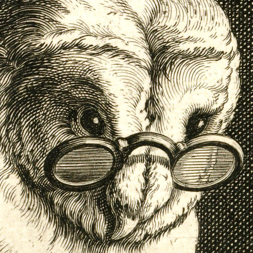
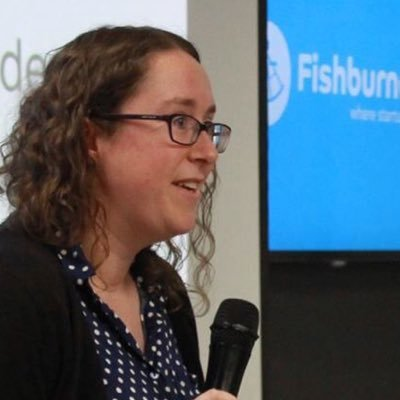

Kris Howard
"Knit One, Compute One"
Kris Howard
"Knit One, Compute One"
 Amber Brown "Why Twisted is the best and how it will make your application awesome"
 Hannah Thompson "Hannah Gets Go-ing"
Grace Nolan "Condensed History of Lockpicking"
More speakers to be announced!
Code of Conduct
WOOTONF operates as an event of linux.conf.au, and as such operates under their Code of Conduct
Tickets for WOOTCONF are available via the linux.conf.au website. All ticket types allow access to the miniconfs. You must have a valid registration to attend WOOTCONF, or any linux.conf.au miniconf.
WOOTCONF, Women Of Open Technology, is a miniconf dedicated to allowing those who identify as women to share their knowledge in relation to the future of open source in Australia in beyond.
Working on a foundation of previous linux.conf.au miniconfs AussieChix and Haecksen, WOOTCONF seeks to provide an safe, inclusive, environment facilitating the sharing of knowledge and experience, with talks ranging from technical to professional development and community. WOOTCONF will include invited keynotes, and encourages new and upcoming speakers to propose and deliver talks. Mentoring by a number of recognised members in the open source community will be available for any speaker who wishes to use such help.
Attendance at this miniconf is open to all attendees of linux.conf.au
Twitter: @KatieConf. Header image by Peter van der Sluijs (CC BY 2.0)
{kind=link}